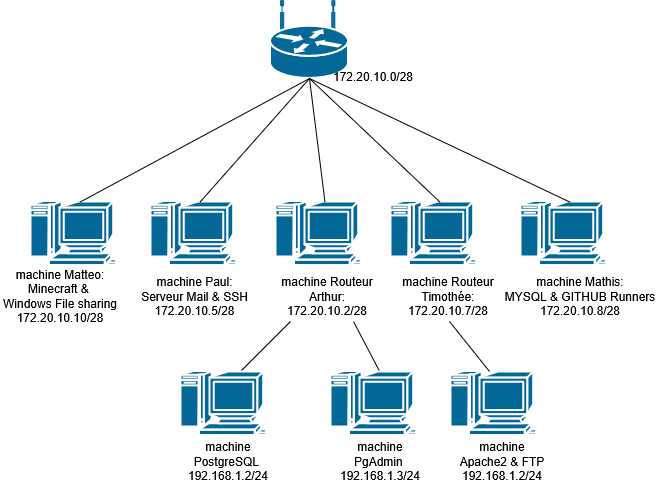
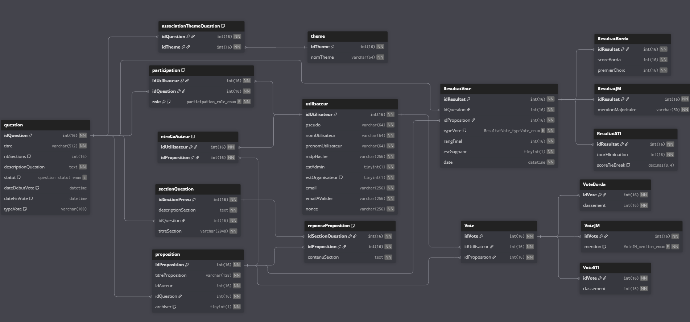

Mes projets 2025-2026
UE3 Administrer des systèmes informatiques communicants complexes:
Administration et interconnexion de services réseau sur machines virtuelles
Dans le cadre d’un TD de mise en place de services réseau, nous avons conçu une infrastructure complète
basée sur plusieurs machines virtuelles interconnectées.
L’objectif était de déployer, configurer et
sécuriser différents services système et réseau (web, base de données, messagerie, accès distant, NAT),
afin de simuler une architecture proche d’un environnement professionnel.
Contexte
Le projet a été réalisé en équipe au sein d’un environnement virtualisé. Chaque membre était responsable
d’un ou plusieurs services (Apache, PostgreSQL, MySQL, SSH, FTP, serveur mail Roundcube/Postfix,
GitHub Runner, serveur Minecraft, partage réseau Windows).
Les machines virtuelles devaient communiquer entre elles via un plan d’adressage défini, avec gestion
des accès distants et des autorisations réseau.
J’ai personnellement travaillé sur la mise en place et la sécurisation du service SSH,
la configuration d’un service de messagerie (Roundcube relié à Apache et au serveur mail),
ainsi que sur la redirection de ports via iptables pour permettre l’accès externe
à un serveur web hébergé sur une machine interne.
Objectifs
- Déployer plusieurs services réseau sur différentes machines virtuelles
- Configurer les accès distants sécurisés (SSH)
- Mettre en place une architecture client/serveur cohérente
- Autoriser les connexions inter-VM via configuration réseau et fichiers système
- Implémenter une redirection de port (NAT) via iptables
- Comprendre le fonctionnement des ports, des règles de firewall et du routage
L’objectif final était d’obtenir un environnement stable dans lequel chaque service
pouvait communiquer correctement avec les autres.
Apprentissages et compétences développées
Ce projet m’a permis de développer des compétences concrètes en administration système Linux :
installation de paquets via apt, gestion des services avec systemctl, modification de fichiers
de configuration (sshd_config, postgresql.conf, pg_hba.conf), et gestion des permissions.
J’ai également approfondi ma compréhension des mécanismes réseau :
plan d’adressage IP, ports, protocoles (HTTP, SSH, FTP, SMTP, IMAP),
redirection NAT avec iptables, règles de forwarding et sécurisation des accès.
Cette expérience illustre pleinement la compétence du BUT :
administrer des systèmes informatiques communicants complexes en assurant
leur déploiement, leur configuration, leur sécurisation et leur interconnexion.
Plan d’adressage réseau du projet

UE4 Gérer des données de l'information:
Conception et gestion d’une base de données relationnelle – SAE 3A
Dans le cadre du développement de notre plateforme web collaborative de vote,
j’ai participé à la conception, à l’implémentation et à l’optimisation
de la base de données relationnelle du projet (SAE3A).
L’objectif était d’assurer la cohérence, la performance et la fiabilité
des données manipulées par l’application.
Contexte
La base de données supporte l’ensemble du fonctionnement du site :
gestion des utilisateurs, des questions, des propositions, des votes,
des tours de scrutin et des relations entre auteurs et co-auteurs.
Elle devait garantir l’intégrité des données tout en respectant
des règles métier complexes liées aux différents types de vote
(jugement majoritaire, Borda, STI, etc.).
Le modèle relationnel final a été construit à partir d’un schéma
conceptuel puis implémenté en MySQL avec clés primaires, clés étrangères,
contraintes d’intégrité référentielle et règles métier avancées.
Objectifs
- Concevoir un modèle de données cohérent et normalisé
- Assurer l’intégrité référentielle entre les tables
- Implémenter des contraintes métier directement en base
- Optimiser les requêtes utilisées par l’application web
- Gérer les différents types de votes via une architecture adaptée
L’enjeu principal était d’avoir une base fiable, performante
et capable d’évoluer avec les sprints du projet.
Apprentissages et compétences développées
Ce projet m’a permis d’approfondir mes compétences en modélisation
et en gestion des données. J’ai travaillé sur la mise en place
de clés primaires et étrangères, de contraintes CHECK et ENUM,
ainsi que sur l’optimisation via la création d’index
sur les colonnes les plus sollicitées.
J’ai également participé à l’implémentation de règles métier avancées
à l’aide de triggers MySQL, notamment pour empêcher qu’un auteur
soit enregistré comme co-auteur d’une même proposition.
Des procédures stockées ont été développées pour :
- récupérer des propositions selon un tour et une question,
- supprimer proprement un vote en fonction de son type,
- vérifier si un utilisateur a déjà voté pour une question donnée.
Ce travail illustre pleinement la compétence
« Gérer des données de l’information » :
concevoir, structurer, sécuriser et optimiser des données
afin de garantir leur cohérence et leur exploitation efficace
par une application.
Schéma relationnel de la base de données

UE5 Conduire un projet:
Site web de vote de textes de loi (Méthode Agile / Scrum)
Site disponible ici: HEXAGORAS

Ce projet a été réalisé dans le cadre d’un travail en équipe visant à concevoir une plateforme web collaborative
dédiée à la soumission, la consultation et le vote de textes de loi. Le développement s’est appuyé sur une
méthodologie Agile (Scrum), avec la définition de rôles utilisateurs distincts (auteur, votant, organisateur,
administrateur) et l’utilisation d'user stories pour formaliser les besoins fonctionnels.
Contexte
L’objectif principal était de développer une application web cohérente, fonctionnelle et évolutive.
Les auteurs peuvent créer et gérer des questions, conserver des brouillons complets (co-auteurs,
dates de début et de fin de vote, configuration) et proposer ou modifier des soumissions.
Les utilisateurs disposent d’une interface lisible et homogène entre les phases de soumission et de vote,
avec des boutons d’action adaptés aux droits (activés ou désactivés selon le contexte) et un affichage
clair des longs contenus.
Le système de vote intègre plusieurs modes (vote classique, vote blanc, vote rejet), ainsi que des
fonctionnalités de modification, suppression et archivage. Des outils de recherche sur les questions
et les utilisateurs facilitent la navigation et la gestion des participants.
Objectifs
Ce projet m’a permis de renforcer mes compétences en conception et développement d’applications web,
notamment dans l’analyse de besoins à partir d'user stories, la conception fonctionnelle et
l’implémentation d’interfaces ergonomiques. J’ai également développé des compétences en gestion de projet
Agile en occupant le rôle de Scrum Master : organisation des sprints, gestion du backlog, animation des
réunions (daily, sprint review, rétrospective) et coordination de l’équipe.
Sur le plan technique, ce projet m’a permis d’améliorer ma rigueur de développement, ma capacité à produire
un code maintenable et à travailler efficacement en équipe dans un contexte proche du monde professionnel.
Apprentissages et compétences développées
Jeu Pokémon TCG – Développement Java collaboratif
Ce projet a été réalisé dans le cadre d’une SAE de programmation Java, en binôme,
avec pour objectif de développer un jeu de cartes Pokémon TCG fonctionnel et structuré.
Le projet s’inscrit dans une démarche de conduite de projet, en respectant un cahier des charges
défini par le corps enseignant et des contraintes de tests et de validation.
Contexte
L’objectif principal était de répondre précisément aux besoins de l’acteur principal
(ici l’enseignant), en développant une application robuste, testable et conforme aux exigences.
Contrairement à des projets précédents où j’avais tendance à aller au-delà des attentes,
ce projet m’a permis de me recentrer sur la qualité du code, la validation par les tests
et le respect strict des consignes. Le jeu devait intégrer une logique métier claire,
une architecture propre et une gestion cohérente des interactions entre les cartes.
Objectifs
Ce projet m’a permis de développer des compétences en conduite de projet informatique,
notamment dans l’analyse des besoins, l’identification des phases de développement et
l’organisation du travail. J’ai appris à utiliser des outils collaboratifs tels que GitLab
pour la gestion de versions, Discord pour la communication et Google Docs pour le suivi du projet.
Le travail en binôme m’a également permis de renforcer mes compétences en collaboration,
en communication technique et en entraide, afin d’aboutir à un code fonctionnel,
optimisé et maintenable.
Apprentissages et compétences développées
Interface du jeu pokemon

Programmation réseau – Sockets TCP en C
Ce projet a été réalisé dans le cadre d’un TP de réseau visant à découvrir et maîtriser
l’API socket en langage C. L’objectif était de comprendre le fonctionnement des communications
client-serveur sous TCP/IP à travers la création progressive d’un serveur, puis de clients
de type « chat ».
Contexte
Le projet est structuré en plusieurs étapes. La première consiste à développer un serveur TCP
testable via la commande telnet, capable de recevoir des messages, d’y répondre
et de gérer correctement les interruptions (Ctrl+C) en fermant proprement les sockets.
La seconde étape vise à implémenter un chat TCP entre un serveur et un client unique,
avec arrêt de la communication sur le message « fin ». Enfin, une version multi-clients
permet au serveur d’accepter plusieurs connexions simultanées, mettant en évidence
les problématiques de synchronisation et de gestion des échanges.
Objectifs
Ce projet m’a permis d’acquérir des compétences solides en programmation réseau bas niveau,
notamment sur l’utilisation des primitives de l’API socket (socket, bind, listen, accept,
read, write). J’ai également renforcé ma compréhension du modèle client-serveur,
du protocole TCP et des contraintes liées aux communications concurrentes.
Ce travail m’a appris à développer des programmes robustes, à tester méthodiquement
et à analyser le comportement d’une application réseau dans un environnement Linux.
Apprentissages et compétences développées
Execution du code C permettant un échange entre 2 machines via socket tcp

Implémentation de l’algorithme RSA – Python
Ce projet a été réalisé dans le cadre d’un TP noté de cours, dont l’objectif était de comprendre
en profondeur le fonctionnement de l’algorithme de chiffrement RSA. Le travail consistait à
implémenter soi-même les différentes étapes mathématiques nécessaires à la génération de clés,
au chiffrement et au déchiffrement de messages.
Contexte
L’objectif principal était de reproduire le mécanisme de RSA sans utiliser de bibliothèques
de chiffrement existantes. Le projet inclut la décomposition en facteurs premiers,
l’algorithme d’Euclide étendu pour le calcul des inverses modulaires, l’exponentiation modulaire,
ainsi que la génération de grands nombres premiers afin de produire des clés RSA réalistes.
Objectifs
Ce projet m’a permis de renforcer mes compétences en algorithmique, en mathématiques appliquées
à l’informatique et en programmation Python. Il m’a surtout permis de comprendre les fondements
théoriques et pratiques de la cryptographie asymétrique, au-delà de l’utilisation « boîte noire »
d’algorithmes existants. Ce travail m’a aidé à développer une approche rigoureuse face à des
problématiques complexes mêlant mathématiques et informatique.
Apprentissages et compétences développées
Extrait du code et de son exécution sur IDEA Intellij